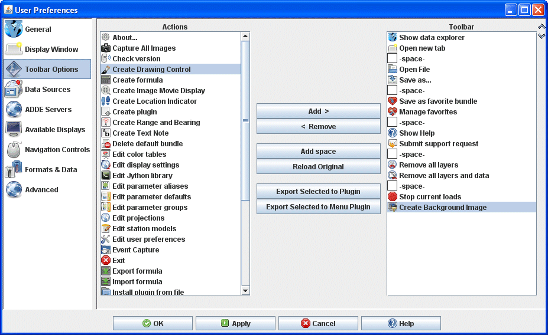
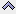
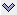

Toolbar Options Preferences
The User Preferences window is accessed in the Main Display window through the Edit->Preferences menu. The Toolbar Options tab allows the user to define what actions/icons
are displayed in the toolbar. The list on the left shows all of the available
actions. The list on the right shows the actions that make up the toolbar. The image below represents the default settings for the Toolbar Options tab.

Image 1: Toolbar Options Preferences (Default)
Properties
- - Adds selected item on left column to the right column, bringing this item to the toolbar. This can also be done by hitting the Right arrow.
-
 - Takes selected from right column to the left column, removing this item from the toolbar. This can also be done by hitting the Left arrow or Delete.
- Takes selected from right column to the left column, removing this item from the toolbar. This can also be done by hitting the Left arrow or Delete.
- - Adds a space between the icons on the toolbar.
- - Undoes any user changes to the Toolbar Options tab, returning the Actions and Toolbar columns to the the way they were at the start of the session.
- - Brings up the Plugin Creator window with the selected action included under the Resources tab.
- - Brings up the Export to Menu window where the user can enter in a Menu Name and select which menu to add the action under.
-  - Moves the selected action in the toolbar column up in the list, changing the location of the action in the toolbar.
-  - Moves the selected action in the toolbar column down in the list, changing the location of the action in the toolbar.